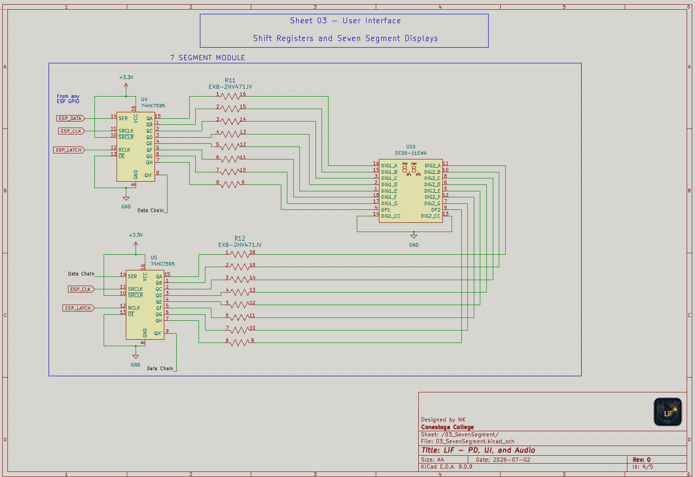

Met with MR to finalize and revise several interface and
power-related circuits, including the double 7-segment display, the
pushbutton/LED layout, a button/LED floor feedback array, and early
USB-C Power Delivery IC options.
I met with MR to work on our project circuits together. During this
session, we finalized a few circuits and ended up redoing some
sections after comparing the practical layout options. The biggest
change was moving toward a double 7-segment display driven by two
shift registers, while still using the
74HC595 as the main display-driving
IC.

Updated double 7-segment display circuit using two 74HC595 shift
registers
The reason for using two shift registers is that each 7-segment digit
needs multiple controlled outputs. Using one
74HC595 per digit keeps the circuit
easier to understand and makes the display wiring cleaner than trying
to directly use a large number of microcontroller GPIO pins.
74HC595 notes
Purpose: 8-bit serial-in, serial/parallel-out shift register
with a storage register and 3-state outputs.
Operating voltage: The 74HC family can commonly operate from
about 2.0 V to 6.0 V, making it usable with 3.3 V or 5 V systems
when the exact variant is chosen correctly.
DS: Serial data input from the ESP32 or other controller.
SHCP / SRCLK: Shift-register clock. Data is shifted in on
clock transitions.
STCP / RCLK: Storage-register/latch clock. This updates the
visible parallel outputs after the byte is shifted in.
OE: Output enable, active low. This can be tied low for
always-on outputs or controlled for blanking/dimming.
MR / SRCLR: Master reset/clear, active low. Normally held
high so the register does not reset unexpectedly.
Q0-Q7: Parallel outputs that can drive the segment lines
through current-limiting resistors or resistor arrays.
Q7S: Serial output used for cascading multiple shift
registers together.
Added a 7-button and 7-LED floor request array
Since we moved away from the rotary encoder idea, another useful
interface feature is a dedicated 7-button array paired with a matching
7-LED array. Each floor button would have its own LED placed directly
above it, so when a passenger presses a floor button, the LED above
that button turns on. This gives the same kind of visual feedback that
a real elevator panel gives when a floor has been selected.
The basic behavior would be simple: button 1 controls LED 1, button 2
controls LED 2, and so on up to button 7. In firmware, each button
press can be stored as a pending floor request, then the matching LED
can stay lit until the elevator reaches that floor or the request is
cleared. This makes the interface much easier to understand because
the user can immediately see which floors are currently queued.
Updated pushbutton and LED circuit for the elevator user
interface
7-button / 7-LED interface notes
Button array: Seven momentary pushbuttons can represent floor
requests 1 through 7.
LED array: Seven indicator LEDs can be placed above the
buttons to show which floor requests are active.
Visual feedback: When a button is pressed, the matching LED
glows to confirm the request was received.
Firmware behavior: The selected floor can be stored as a
queued request, then cleared once the cab reaches that floor.
Electrical note: Each LED will be fed through a resistor
array keep the PCB cleaner.
GPIO note: the LEDs will be driven through a shift register
such as the 74HC595.
This also fits nicely with the double 7-segment display. The 7-segment
display can show the current elevator floor, while the button/LED
array shows which destination floors are currently requested.
Together, these two sections make the panel feel much closer to a real
elevator user interface instead of just a basic test board.
Researched USB-C Power Delivery controller options
For USB-C Power Delivery, I have not made the full circuit yet, but I
found a few possible IC options. The first promising option was the
STUSB4500LQTR, which is a QFN-based
USB Type-C sink controller. It seems very useful and well-documented,
but it is also a little pricey at roughly $2.60 per piece.
Purpose: Standalone USB Type-C sink port controller. It
handles Type-C attach detection and sink-side power path control.
Package: QFN-style package, which is compact but more
annoying to work with and needs an xray to gurantee proper reflow. A
package repalcement, especially to SOIC or SOT packages would be a
better idea.
VDD: Operates from about 3.3 V to 6.0 V on the VDD pin.
VSYS: Supports about 3.0 V to 5.5 V when powered from the
system supply.
CC1 / CC2: USB Type-C configuration-channel pins used to
detect plug attachment, cable orientation, and source capability.
VBUS_EN_SNK: Output used to enable the incoming VBUS power
path once a valid source is attached.
SCL / SDA: I2C interface pins used for
configuration and status reading.
RESET / ALERT / GPIO: Useful control and status pins for
fault handling or MCU interaction.
Found a cheaper CH221K USB-C PD option
MR recommended looking for a cheaper and easier USB-C PD option, so I
found the WCH CH221K. This IC comes
in a much smaller and simpler SOT-23-6 style package with only a few
pins. It looks like it would be much easier to place in the schematic
and route on the PCB compared to a QFN package.
The main issue is that the datasheet I found is in Mandarin. Since I
am not very fluent, it will take some time to translate and verify it
properly. However, because of the lower cost, simpler wiring, and
small package, it may still be a better option for our board if the
required voltage configuration can be confirmed.
CH221K notes
Purpose: USB-C PD sink/trigger controller for requesting a
fixed voltage from a USB-C PD source.
Package: SOT-23-6 style package, which is small but still
easier to handle than many QFN-only options.
Protocol support: CH221K is focused on USB PD 3.0/2.0 and
does not include the same wider fast-charging protocol support as
some CH224 variants.
VDD: Power input pin. The reference circuit uses a 1 µF
decoupling capacitor and a series resistor connection from VBUS.
GND: Common ground.
PG: Open-drain Power Good output, active low by default.
CC1 / CC2: USB Type-C configuration-channel pins connected to
the Type-C connector.
CFG: Analog configuration input. A resistor value selects the
requested PD voltage.
Voltage selection: Example resistor options listed in the
datasheet include 10 kΩ for 5 V, 20 kΩ for 9 V, 47
kΩ for 12 V, 100 kΩ for 15 V, and 200 kΩ for 20 V.
Current decision
At this point, the double 7-segment display circuit and pushbutton
interface are much more settled. The USB-C PD section still needs more
work before the final schematic is made. The STUSB4500LQTR seems
better documented, but the CH221K appears cheaper and simpler. The
next step is to translate/check the CH221K datasheet enough to confirm
the wiring, the requested voltage configuration, and whether it is
safe for our intended power input.